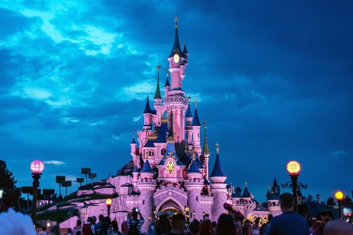
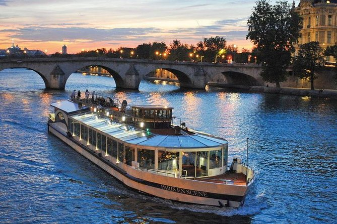
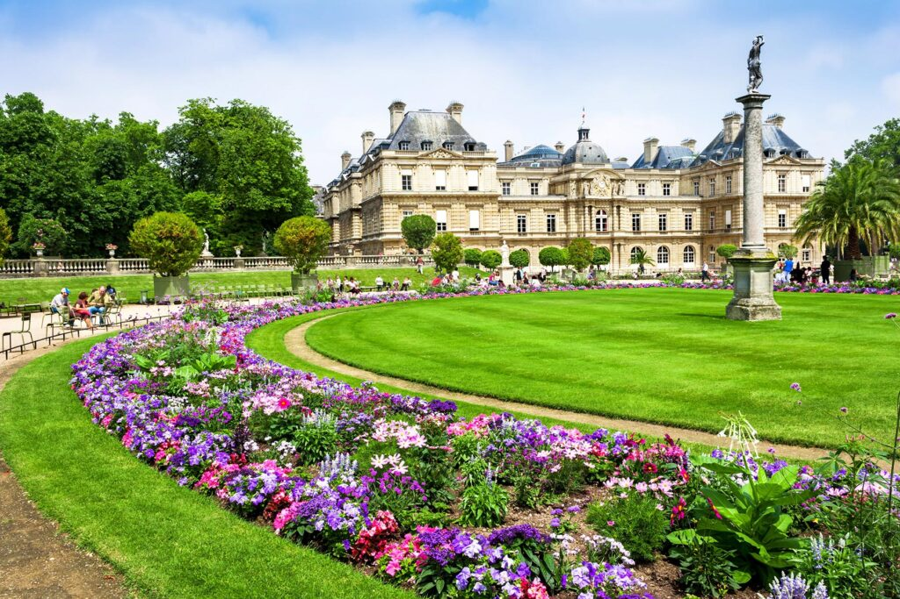

FRANCE
PARIS
Eiffel Tower

"The Eiffel Tower doesn’t just sparkle — it steals hearts."
DisneyLand

"Where magic feels real and grown-ups become kids again."
Louvre Museum

"Art doesn’t imitate life — it defines it. The Louvre proves that."
Seine River Cruise

"The Seine doesn’t flow with water, it flows with dreams."
Luxembourg Gardens

"A garden made for daydreams and quiet thoughts."